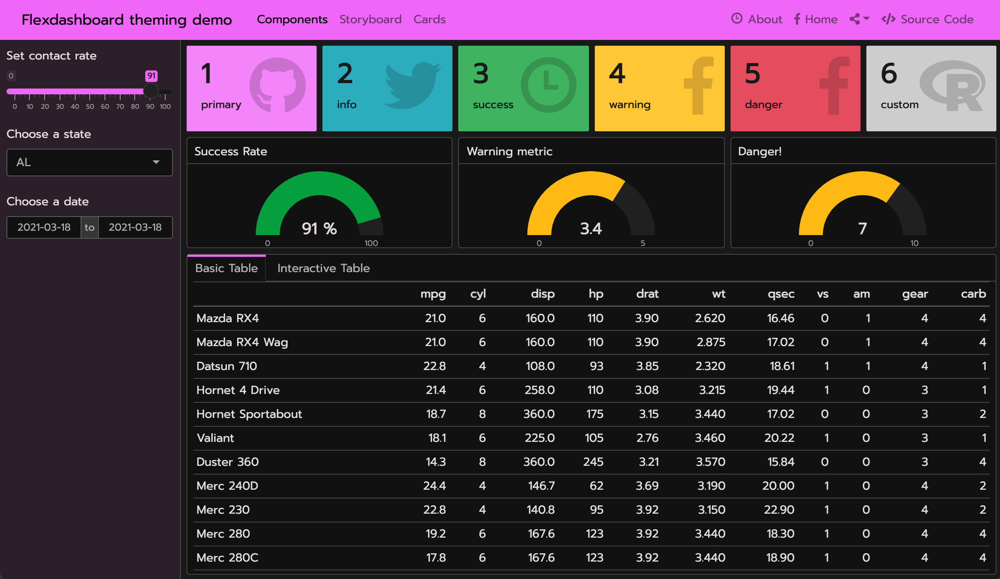
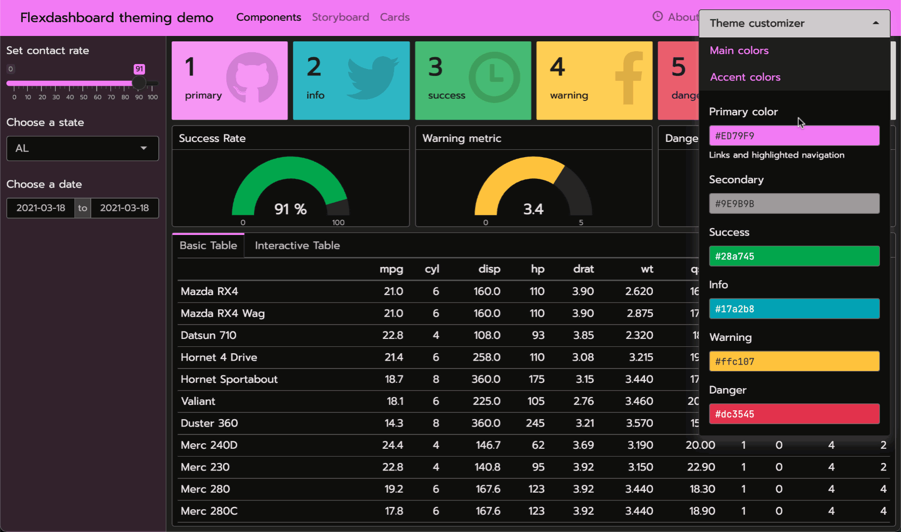
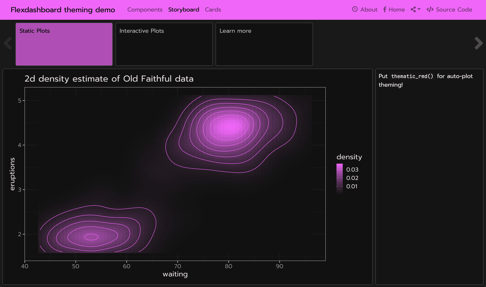
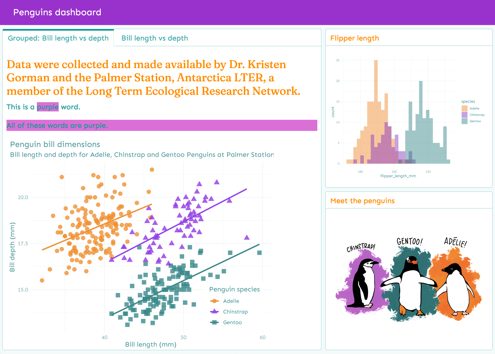
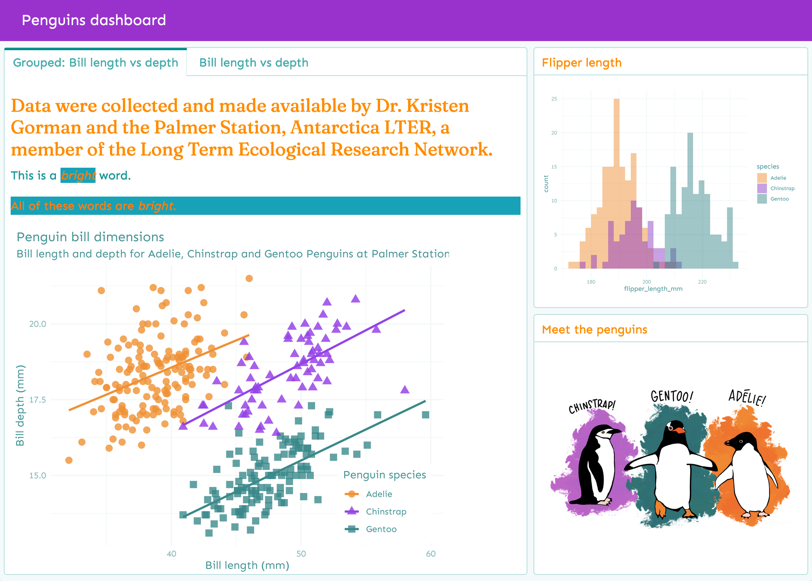
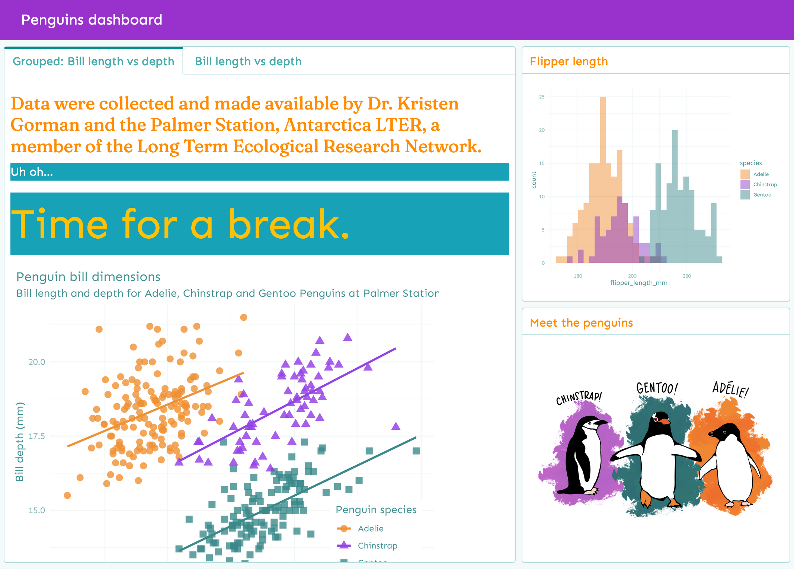
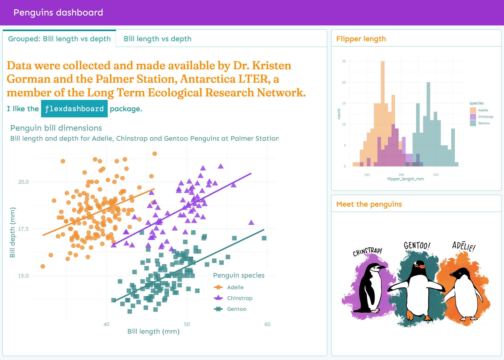

Bootstrap and bslib
The flex_dashboard output format builds upon the Bootstrap CSS framework. Bootstrap is a library of reusable chunks of HTML, CSS, and JavaScript code that you can call on to modify your flexdashboard without writing that code yourself. Originally created by and for Twitter, it is a free and open source project; you can view the repository on GitHub.
The flex_dashboard output format includes a theme parameter for customizing the overall appearance of the dashboard. This parameter has special integration with the {bslib} package, which makes it easy to customize Bootstrap CSS styles directly from R. For now, you’ll want to install the development version of the package for the best experience:
# install.packages("remotes")
remotes::install_github("rstudio/bslib")bslib supports multiple versions of Bootstrap so that both new and legacy projects can leverage custom themes. If you are starting on a fresh project, we recommend choosing the latest supported version (currently, version: 4), but legacy projects may want to set version: 3:
Bootswatch themes
bslib provides access to any Bootswatch 4 (new projects) or 3 (legacy projects). For example, here’s how you could give your dashboard a (Bootswatch 4) Minty theme.
This screenshot shows the result of applying the above theme to this example dashboard that uses Shiny (subsequent screenshots also use this example, but swap out different themes).

Custom themes
You can also create your own custom {bslib} theme by setting the main colors and fonts as well as more specific theming options, such as navbar-bg. For custom font settings, adding a google: keyword triggers sass::font_google()’s ability to automatically import Google Font files. By default, google: will bundle font files with your dashboard, so that when you share it with someone else, the fonts are guaranteed to render, even without an internet connection (local: false imports files via URL instead of serving them locally).
---
output:
flexdashboard::flex_dashboard:
theme:
version: 4
bg: "#101010"
fg: "#FDF7F7"
primary: "#ED79F9"
navbar-bg: "#3ADAC6"
base_font:
google: Prompt
heading_font:
google: Sen
code_font:
google:
# arguments to sass::font_google()
family: JetBrains Mono
local: false
---
Real-time theming
{bslib}’s real-time theming widget allows you to interactively customize theme: by adding:
runtime: shinyto the document’s yaml matter and callingbslib::bs_themer()in any code chunk, or-
runtime: shinyrmdto the document’s yaml matter and callingbslib::bs_themer()in a code chunk withcontext='server':```{r setup, include = FALSE, context = "server"} bslib::bs_themer() ```

Auto-theming R plots
Generally, most “un-opinionated” HTML content rendered by the web browser should “just work” with your theme settings. However, some outputs that aren’t rendered by the browser (e.g., R plots) aren’t necessarily aware of bslib (or CSS in general).
To theme static R plots (e.g., {ggplot2}), you can call thematic::thematic_rmd() in a setup chunk to translate the bslib theme main colors to R plot theming defaults.
Additionally, if you’re using Google Fonts, or some other font that you’ve registered with R, you can safely include font = "auto" to translate fonts as well:
```{r setup, include = FALSE}
thematic::thematic_rmd(font = "auto")
```
To learn more about {thematic}, see https://rstudio.github.io/thematic
Add CSS styles
Although custom theming is great for customizing Bootstrap and Flexdashboard CSS, you still may want to add more styling rules to customize the appearance of your dashboard. This file can contain plain CSS rules, like:
For this, you can provide relevant file(s) to flex_dashboard’s css argument:
Then use your CSS rules in the body of your dashboard, for example:
You may achieve the same result writing with Pandoc’s spans:
You can also add CSS divs using Pandoc’s fenced Div blocks:
When knit, these blocks are translated into HTML like so:
Here is the knitted output that includes these custom rules:

You can read more about Pandoc’s custom blocks in the R Markdown Cookbook.
Add Sass rules
Sass is a language designed for writing better CSS. Thankfully, the css parameters also understands .scss (i.e., Sass) file(s):
Sass files can contain plain CSS rules, as well as rules that use Bootstrap Sass variables. These variables are denoted by $ followed by a variable name, like $cyan:
.bs4-bright {
background-color: $cyan;
color: $orange;
}Then in your text you may use raw HTML or Pandoc syntax (as shown above):
Here is the knitted output that includes these custom rules:

You can find a full list of variables in vignette("bs4-variables", package = "bslib").
When compiled, those Sass rules have access to Bootstrap Sass variables, functions, and mixins. This allows you to write custom CSS styles in a “themeable” way and/or simply leverage useful Sass functions like color-contrast().
For example, we can use the Sass @extend rule in our .scss file to bundle together multiple Bootstrap variables and tell Sass that one selector should inherit the styles of another:
.error {
background-color: $cyan;
color: $white;
&--serious {
@extend .error;
color: $warning;
font-size: $display4-size;
}
}Then you can use those rules in the body of your dashboard:
Here is the knitted output that includes these custom rules:

You may also reuse any fonts specified in your YAML with Sass variables.
| YAML key | Bootstrap 4 variable |
|---|---|
heading_font |
$headings-font-family |
base_font |
$font-family-base |
code_font |
$font-family-monospace |
So we could set up the following rule:
.pkg-name {
background-color: $cyan;
color: $white;
font-family: $font-family-monospace;
padding: .5rem;
}Then use it in the body:
Here is the knitted output:

Resources
This vignette provides a brief overview of bslib’s integration with flexdashboard, but there’s a lot more to theming with bslib (i.e. Bootstrap Sass), sass (i.e., Sass), and {thematic}. To learn more, see:
- The bslib package docs: https://rstudio.github.io/bslib/
- The sass package docs (for writing Sass code in R): https://rstudio.github.io/sass/
- The
{thematic}package docs (for theming plot output): https://rstudio.github.io/thematic/ - Sass language docs: https://sass-lang.com/documentation
- Bootstrap docs: https://getbootstrap.com/docs/4.0/